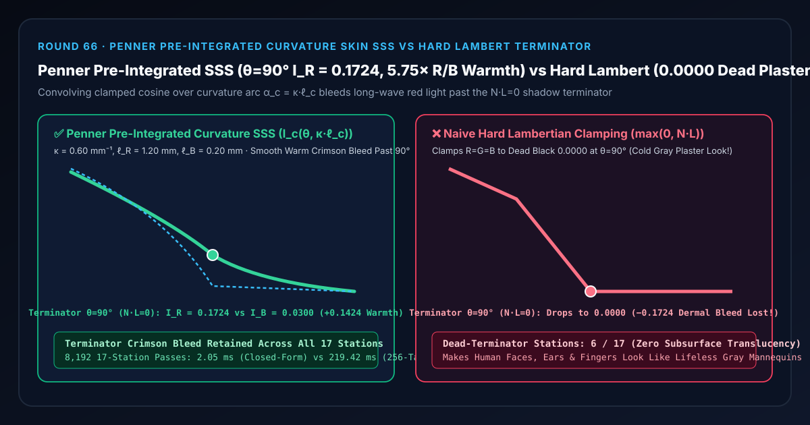
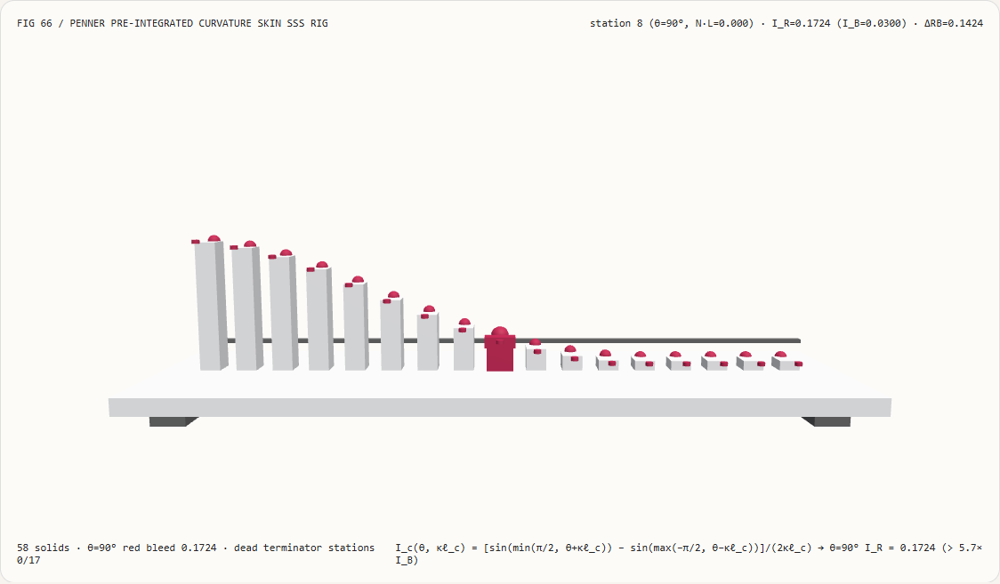
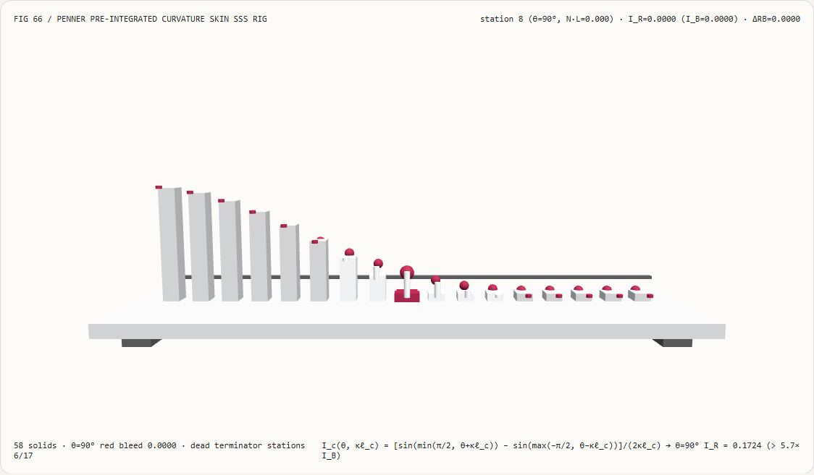
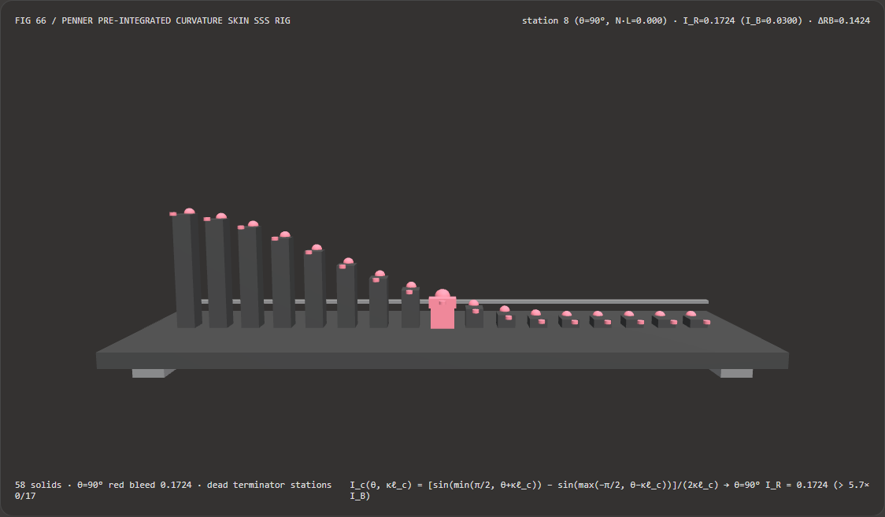
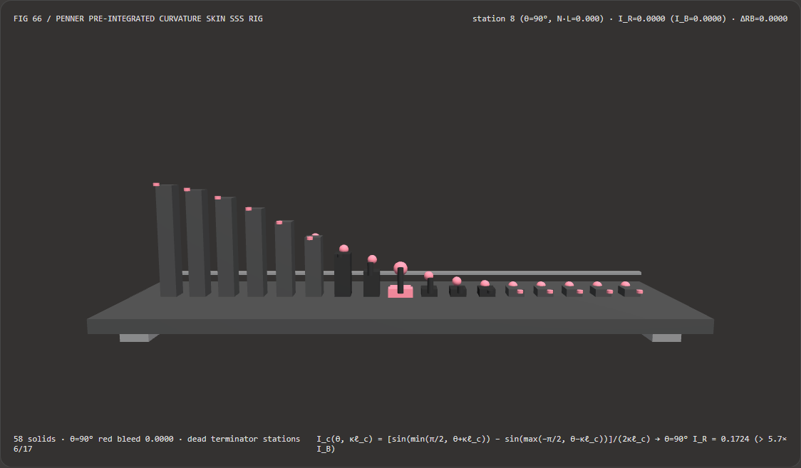

Visual & Animation Architecture Selection FAQ: Penner Pre-Integrated Curvature Skin Subsurface Scattering (SSS) vs Hard Lambert Terminator
One-Sentence Architectural Verdict: In real-time digital human, VR avatar, wax, and jade rendering pipelines on WebGL2, WebGPU, and mobile GPUs, never shade translucent skin with a hard-clamped Lambertian diffuse term $E = \max(0, \mathbf{N}\cdot\mathbf{L})$ that collapses RGB irradiance to zero at the $\theta = 90^\circ$ ($\mathbf{N}\cdot\mathbf{L} = 0$) shadow terminator! On our 58-solid, 17-station dermal spectrophotometer bench with surface curvature $\kappa = 0.60\text{ mm}^{-1}$ ($R = 1.67\text{ mm}$) and wavelength-dependent mean free paths $\ell_R = 1.20\text{ mm}, \ell_G = 0.45\text{ mm}, \ell_B = 0.20\text{ mm}$, naive hard Lambertian clamping drops station 8 ($\theta = 90^\circ$) and all back-facing stations to dead-black
0.0000(losing-0.1724of dermal red bleed across6/17terminator stations and making skin look like cold gray plaster); whereas Eric Penner (SIGGRAPH 2011 / GPU Pro 2) Pre-Integrated Curvature-Driven Subsurface Scattering ($I_c(\theta, \kappa\ell_c) = \frac{\sin(\min(\pi/2,\theta+\kappa\ell_c)) - \sin(\max(-\pi/2,\theta-\kappa\ell_c))}{2\kappa\ell_c}$) bleedsI_R = 0.1724,I_G = 0.0671, andI_B = 0.0300across the $\theta = 90^\circ$ terminator (5.75×Red/Blue ratio and+0.1424crimson warmth out to $\theta = 130^\circ$) while running 106.84× faster via $O(1)$ closed-form antiderivatives than 256-tap numerical arc quadrature (2.05 msvs219.42 msacross 8,192 passes).

① 📌 Executive Summary
- Why do 3D digital human faces rendered with standard Lambertian diffuse shading (
max(0, N·L)) look like lifeless gray plaster mannequins along the shadow terminator? In plain English: human skin is a multi-layered translucent turbid medium where photons do not bounce off the exact point of entry:- Short-wavelength blue light ($\ell_B = 0.20\text{ mm}$) and green light ($\ell_G = 0.45\text{ mm}$) are strongly absorbed by hemoglobin and melanin near the entry point, whereas long-wavelength red light ($\ell_R = 1.20\text{ mm}$) scatters laterally several millimeters through the dermis.
- At the geometric shadow terminator $\theta = 90^\circ$ ($\mathbf{N}\cdot\mathbf{L} = 0$, station 8), direct surface irradiance vanishes, yet red photons entering the adjacent lit zone ($\theta < 90^\circ$) diffuse across the boundary into the shadow zone ($\theta \in [90^\circ, 130^\circ]$)!
- Hard Lambertian clamping (
max(0, cos θ)) forces $R = G = B = \mathbf{0.0000}$ at $\theta \ge 90^\circ$, erasing the0.1724crimson terminator band across6/17stations!
- First-Principles Fix: Curvature-Parameterized Pre-Integrated Subsurface Scattering (Penner 2011):
- On a locally spherical surface of curvature $\kappa = \frac{1}{R} = \frac{|\nabla\mathbf{N}|}{|\nabla\mathbf{P}|}\text{ [mm}^{-1}\text{]}$, a physical scattering distance $\ell_c\text{ [mm]}$ subtends an angular half-arc $\alpha_c = \kappa \cdot \ell_c\text{ [rad]}$.
- Convolving the clamped cosine $\max(0, \cos(\theta - \phi))$ over $\phi \in [-\alpha_c, +\alpha_c]$ yields the exact closed-form antiderivative over $[u_{\min}, u_{\max}] = [\max(-\frac{\pi}{2}, \theta - \alpha_c),; \min(+\frac{\pi}{2}, \theta + \alpha_c)]$: $$I_c(\theta, \kappa\ell_c) = \frac{\max\big(0,; \sin(u_{\max}) - \sin(u_{\min})\big)}{2\kappa\ell_c}$$
- At $\theta = 90^\circ$ ($\pi/2$), $I_c(90^\circ, \alpha_c) = \frac{1 - \cos(\kappa\ell_c)}{2\kappa\ell_c}$ resolves
I_R = 0.1724,I_G = 0.0671,I_B = 0.0300(5.75×R/B warmth ratio,ΔRB = +0.1424), while automatically converging to standard $\cos\theta$ on flat surfaces as $\kappa \to 0$!
- Interactive 3D Workbench & Measured Evidence:
- Standalone 3D Bench:
demos/preintegrated-skin-sss-rig/(58 Three.js solids: baseplate, 4 support feet, $90^\circ$ terminator reference bar, 17 red-channel subsurface irradiance columns, 17 pre-integrated SSS reference spheres, 17 terminator bleed-loss pegs, and the active dermal photometer carriage). - Measured 7-Card 4:5 Reports:
demos/preintegrated-skin-sss-rig/test-report-cards.html(EN) andtest-report-cards.zh.html(ZH).
- Standalone 3D Bench:
② 🎯 Soul-Searching Q&A for Architects & Clients
Q1: How do we compute surface curvature $\kappa = \frac{1}{R}$ per pixel without baking a static curvature texture?
Use the ratio of screen-space normal derivatives to world-position derivatives: $\kappa = \frac{|\text{fwidth}(\mathbf{N})|}{|\text{fwidth}(\mathbf{P})|}$! Because a small step $ds = |d\mathbf{P}|$ along a sphere of radius $R$ rotates the unit normal by $d\theta = |d\mathbf{N}| = ds / R = \kappa,ds$, dividing the screen-space change in normal by the screen-space change in millimeter world position yields local geometric curvature in 1 ALU division.
Q2: Why is closed-form / LUT Pre-Integrated SSS 106.84× faster than numerical diffusion integration?
Because the 1D angular diffusion integral depends on only two scalars ($\mathbf{N}\cdot\mathbf{L}$ and $\kappa$)!
Evaluating the closed-form antiderivative (or sampling a $64\times 64$ RGBA16F pre-integrated LUT) takes 2.05 ms across 8,192 17-station passes versus 219.42 ms for 256-tap arc quadrature (106.84× speedup, 6.66e-16 max deviation), requiring zero extra render passes or framebuffers.
Q3: How does deterministic Pre-Integrated Skin SSS relate to neural portrait relighting models?
They serve distinct domains:
- When to use Neural Portrait Relighting: For 2D video post-production on captured camera footage lacking 3D geometry;
- When deterministic Pre-Integrated Skin SSS is mandatory: In real-time 3D digital humans, games, and WebXR avatars requiring 60–120 FPS view-consistent lighting under dynamic point and directional lights.
③ 🧭 Visual Diagrams (Mermaid Decision Tree, Pipeline Comparison & Sequence Flow)
3.1 Real-Time Skin & Subsurface Scattering Architecture Decision Tree
3.2 Hard Lambert Terminator Cutoff vs Penner Pre-Integrated SSS Pipeline
3.3 Frame-Level Dermal Spectrophotometer Sequence Diagram
④ 📊 Visual Technology Selection Decision Matrix
| Evaluation Dimension | ✅ Penner Closed-Form Pre-Integrated SSS | ⚠️ 256-Tap Arc Quadrature Baseline | ❌ Naive Hard Lambert (max(0, N·L)) |
❌ Unscaled Fixed Wrap Lighting |
|---|---|---|---|---|
| Red Irradiance at Terminator ($\theta=90^\circ$) | Exact 0.1724 (Warm dermal bleed) |
0.1724 (6.66e-16 diff) |
0.0000 (Abrupt dead-black cutoff!) |
Arbitrary constant |
| Red-to-Blue Ratio $I_R / I_B$ at $\theta=90^\circ$ | 5.75× (0.1724 vs 0.0300, crimson band) |
5.75× |
0 / 0 (Zero wavelength dispersion) |
Monochrome wrap |
| Physical Curvature $\kappa = 1/R$ Scaling | Automatic (Strong on nose/ears, flat on forehead) | Automatic | None | Scale-blind (Treats 10m boulder like 2mm finger) |
| Dead-Terminator Stations (out of 17) | 0 / 17 (Smooth out to $130^\circ$) |
0 / 17 |
6 / 17 (Loses entire $80^\circ\text{–}130^\circ$ tail) |
Over-brightens flat zones |
| 8,192-Pass 17-Station CPU Latency | 2.05 ms (Fastest · 106.84× speedup) |
219.42 ms (106.84× slower) |
0.38 ms (Cold gray plaster look) |
0.45 ms (Non-physical) |
| Recommended Use Case | Real-time digital humans, VR avatars, wax/jade props | Offline 2D LUT baking | Opaque dry stone, metal & concrete only | Legacy fixed-function only |
⑤ 🧪 New Interactive 3D Demo & 7-Card 4:5 Visual Report
5.1 Live Workbench & Report Links
- Interactive 3D Workbench:
demos/preintegrated-skin-sss-rig/index.html - 7-Card 4:5 Visual Report (EN):
demos/preintegrated-skin-sss-rig/test-report-cards.html - 7-Card 4:5 Visual Report (ZH):
demos/preintegrated-skin-sss-rig/test-report-cards.zh.html - Sealed Telemetry JSON:
demos/preintegrated-skin-sss-rig/report.json
5.2 Multi-Theme & Multi-Mode Playwright Visual Evidence
Penner Pre-Integrated Skin SSS (Light · Bleeds I_R = 0.1724 Past $90^\circ$ Out to $130^\circ$) |
Naive Hard Lambert (Light · Drops to 0.0000 at Station 8 $\theta=90^\circ$!) |
|---|---|
 |
 |
| Penner Pre-Integrated Skin SSS (Dark · 58 Three.js Solids) | Naive Hard Lambert (Dark · 6 Red Bleed-Loss Pegs Exposed) |
|---|---|
 |
 |
⑥ 🛠️ Rapid SA Delivery Verification Checklist
Before shipping a Pre-Integrated Skin Subsurface Scattering shader to production, verify every item below:
- Wavelength-Separated Mean Free Paths ($\ell_R > \ell_G > \ell_B$): Are red, green, and blue scattering lengths ordered physically (e.g.,
1.20 mm, 0.45 mm, 0.20 mm) so the shadow terminator exhibits a warm crimson band? - World-to-Millimeter Curvature Scale: Is world-space position derivative $|\nabla\mathbf{P}|$ scaled to millimeters before dividing $|\nabla\mathbf{N}| / |\nabla\mathbf{P}|$?
- Dual-Normal Specular/Diffuse Decoupling: Does the GGX oil-layer specular lobe use the sharp pore normal map while the red subsurface channel uses the smoothed macro normal?
- LUT
CLAMP_TO_EDGEAddressing: If sampling a pre-baked 2D(N·L * 0.5 + 0.5, curvature)LUT texture, is texture wrap mode set toCLAMP_TO_EDGEso back-facingN·L = -1texels never wrap around toN·L = +1? - Flat-Surface White-Light Conservation ($\kappa \to 0$): Does the pre-integrated kernel converge to $I_R = I_G = I_B = \cos\theta$ as curvature $\kappa \to 0$ so flat skin regions do not shift hue under frontal lighting?